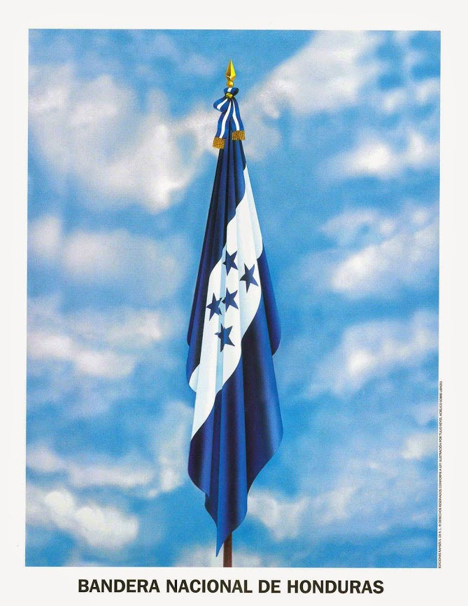
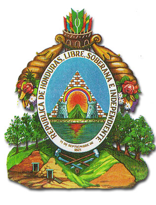
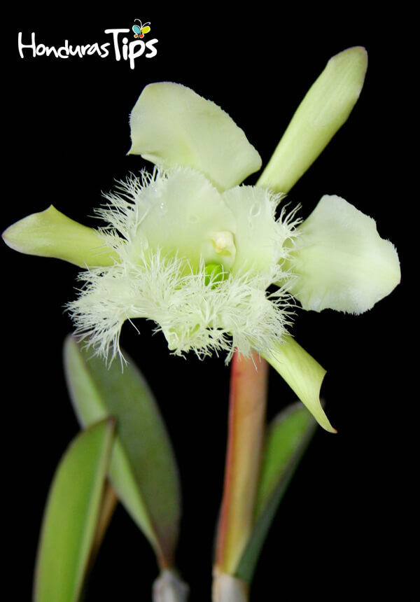
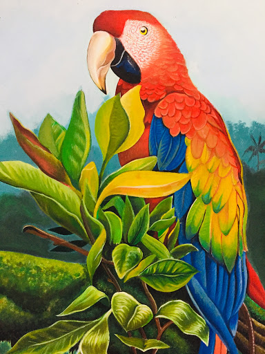

Bandera Nacional
La bandera de Honduras cuenta con tres franjas horizontales dos de ellas son azules y una blanca. Las azules simbolizan el cielo. El blanco la paz. Las cinco estrellas, el ideal de Morazán, por una sola patria en la región , representa los miembros de la antigua República Federal de América Central: Costa Rica, El Salvador, Guatemala, Honduras y Nicaragua.
Escudo Nacional
Por iniciativa de don Dionisio de Herrera en su cargo como Jefe de Estado de Honduras, decretó la creación de un Escudo Nacional, el 3 de octubre de 1825. El representa de su historia y la variedad de los recursos naturales que poseen y los cuales deben proteger y conservar.
Flor Nacional
Por mucho tiempo se consideró Flor Nacional la Rosa, en un período comprendido entre 1946-1969. Pero fue tomado en cuenta que la Rosa no era originaria de Honduras, se derogó el Decreto Legislativo No. 17 del 12 de enero de 1946.
Arbol Nacional

El gobierno estableció el árbol del pino como símbolo nacional en acuerdo # 429 emitidos en Tegucigalpa el 14 de mayo 1926. Este acuerdo fue diseñado para establecer medidas protectoras de conservar y de mejorar los recursos existentes a través del país.
Ave Nacional
La Guacamaya o Guara Roja ha sido seleccionada como símbolo de su Fauna Nacional, según decreto ejecutivo Nº 36-93 emitido el 28 de junio de 1993 por el soberano Congreso Nacional. Ha sido seleccionada como símbolo de su Fauna Nacional, según decreto ejecutivo Nº 36-93 emitido el 28 de junio de 1993 por el soberano Congreso Nacional.